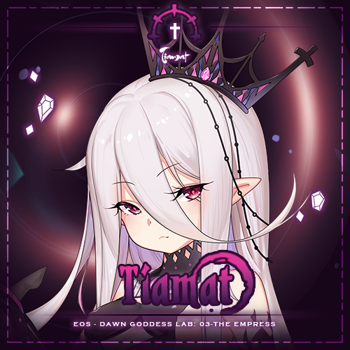
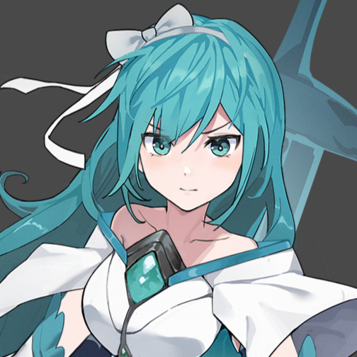

“在做Web作业的时候，要是没有可做的东西的话，在这门课的生涯就要完蛋了吧？”
“对了，要不就做个用来展览自己做出来的MOD的网站吧！”
——在这样的念头下，这个网站就这么出现了。
| 罗兰 | |
| 超·阿扎尔 | |
|  | 提亚玛特 |
|  | 青宝石 |
《超时空方舟》是由韩国游戏公司AlFine开发的一款混合了组队RPG、卡牌构筑、Roguelike要素于一体的单机游戏。
在该游戏的背景设定中，世界被黑雾所侵蚀，导致许多生物变成怪物。幸存的人类选择建造天空城市“方舟”，在地球上空苟延残喘。而地球表面则以及变成盘踞着凶猛野兽、邪恶组织的“扭曲之地”。 而在“方舟”的内部，有着能回溯到灾难发生之前的时空的装置——“钟楼”。只要启动钟楼便能回到过去，回到人类的繁荣时代。
在游戏中，玩家扮演的主角“露西”有着“预言少女”的称号，肩负起带领同伴们在扭曲之地中寻找作为启动钟楼的钥匙——“时光之影”的碎片的责任。通过招募拥有特殊能力的队员并学习各种技能，组成最强的队伍，最终拯救扭曲的世界。
据制作人所说，这个游戏原本的灵感来自暗黑地牢，因此你可以在这个游戏里看到类似的四人队伍、命中率与闪避率面板。而区别于其他卡牌Roguelike游戏的是，《超时空方舟》的双血条机制以及独具特色的卡牌构建系统使得其 没有落入杀戮尖塔like的陷阱而成为泯然众人矣的存在。另外，该游戏浓厚的二次元风格也是一大卖点。
我入坑这个游戏的时间恰好是在刚升上大学的时候。在接触这款游戏之后，我很快就被它精良的制作、优秀的游戏性所吸引。“吃过美餐的人自然会在一瞬间有着成为厨子的愿望”，考虑到自己的专业，我有能力也有愿望为这款游戏的内容添砖加瓦。
不过，说着容易做着难，《超时空方舟》的游戏引擎是Unity，这意味着它的基础编程语言是C#，而当时的我甚至连C语言都没学多少。不过，在诸多前辈的教导下，我磕磕碰碰地尝试制作了生平以来的第一个MOD。超前掌握计算机的领域的知识并不容易，但是制作MOD的时光确实也为我的学习过程增加了一份经验
在我掌握了基本的MOD制作流程之后，我开始为他人制作MOD。委托人们都希望那些在自己脑海中的角色变成真实的存在，成为自己喜欢的游戏的一块小小的拼图，而我则是让这些拼图成功地与整个游戏融为一体的协助者。